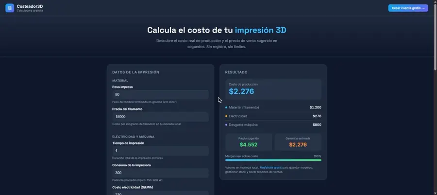
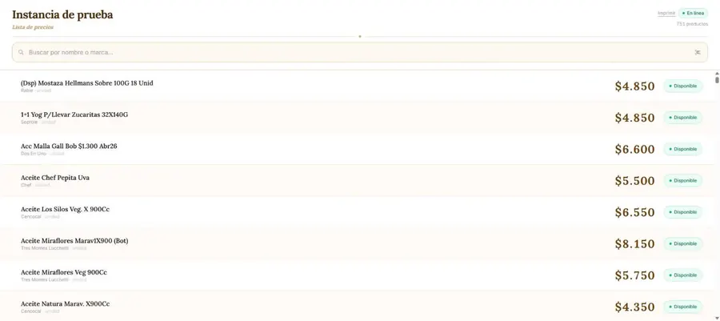
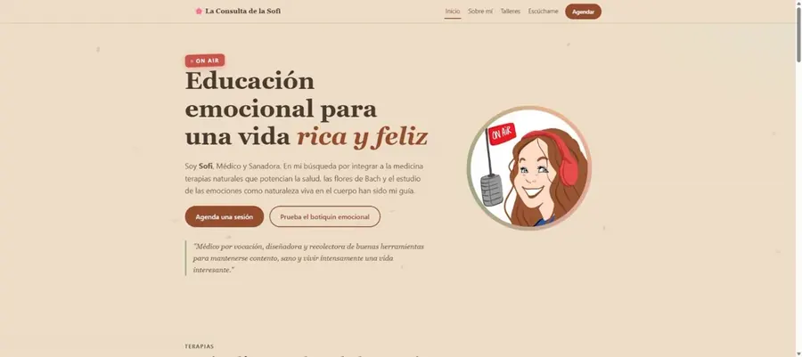
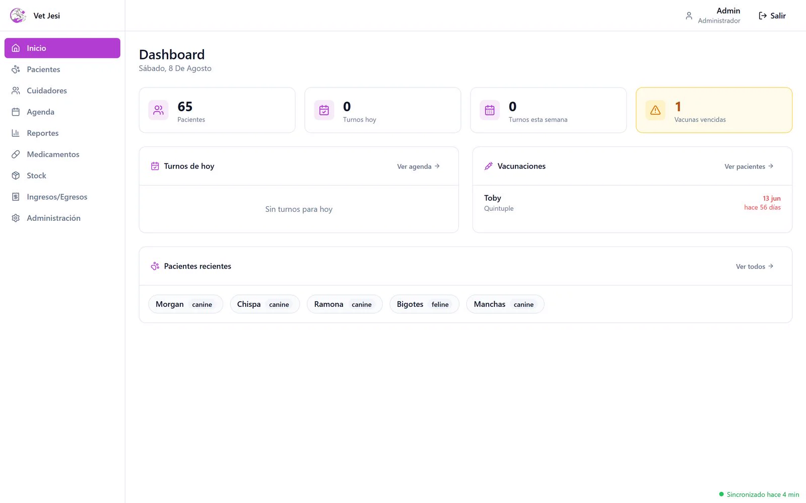
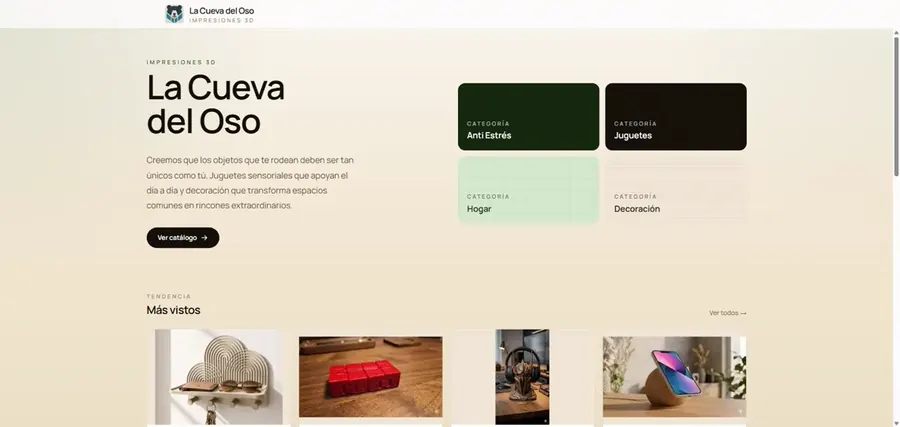

Portafolio
Mis propios negocios son mi banco de pruebas: lo que te ofrezco, primero lo uso yo. El resto son proyectos de clientes, terminados y en curso.
Todos los proyectos
-

01Costeador 3D
Proyecto propioCalcula el costo real de una impresión 3D: filamento, luz, horas de máquina, merma.
-

02Lista de Precios (Template)
Demo públicaProducto reutilizable de listas de precios que se recalculan solas cuando sube un insumo, con kiosco público y panel de administración (productos, stock, proveedores, reportes). Incluye IA que lee la factura del proveedor desde una foto o un PDF y actualiza los precios sola, sin tipeo manual. Primer caso real: la amasandería de mis padres, subir la harina recalcula toda la lista sola. Actualizar precios pasó de ser una tarea de una vez al mes, vendiendo semanas a precio viejo, a 20 minutos al día con las facturas que van llegando.
-

03La Consulta de la Sofi
Cliente realSitio para Sofía Vera, médico y sanadora: terapia floral con flores de Bach, sanación energética, y talleres y charlas sobre educación emocional.
-

04Veterinaria Jessi
Cliente realSistema de gestión clínica para una veterinaria: pacientes con ficha e historial, visitas con receta descargable, agenda, catálogo de ~1.900 medicamentos, stock y finanzas con reportes mensuales. Sistema interno con login: los datos que se ven en las capturas son de prueba, no de pacientes reales.
-
05
Adaba
PróximamenteNuevo proyecto en camino.
-

06Tienda La Cueva del Oso 3D
Proyecto propioCatálogo, carro y panel de administración. En producción, con dominio propio, la hice y la opero yo.